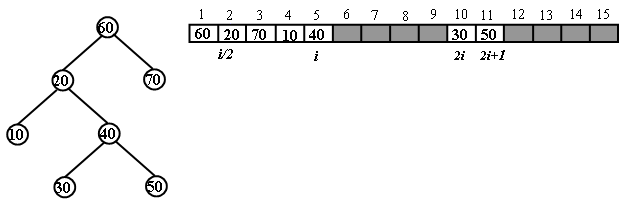
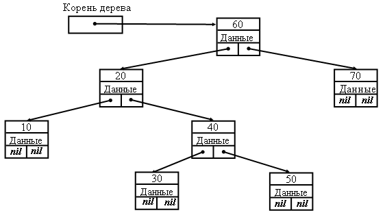

|
|
Двоичное бинарное дерево поиска (BST - дерево) - упорядоченное дерево, каждая вершина (узел) которого имеет не более двух потомков, причем каждый из потомков считается либо левым сыном либо правым сыном своего родителя. Как абстрактный тип данных, BST-дерево предусматривает операции поиска, вставки и удаления элементов по ключу. Используя эти операции можно построить любое бинарное дерево. Операции вставки, удаления и поиска элементов для BST-дерева используют правило двоичного поиска при доступе к элементу с заданным значением ключа. Поэтому трудоёмкость этих операций соответствует трудоёмкости бинарного поиска в упорядоченном множестве и имеет нотацию O(log2n). Необходимо отметить структурную зависимость BST-дерева от порядка поступления и удаления элементов. Например, при последовательных вставках элементов со строго возрастающими ключами, структура BST-дерева выродится в линейный список правых сыновей. В этом случае трудоёмкость операций возрастёт до нотации O(n). Математические свойства бинарных деревьевБинарное дерево с n внутренними узлами имеет n+1 внешних узлов. Начальный узел в дереве называется корнем. Внутренним узлом является узел с двумя сыновьями. Внешним узлом является узел с одним сыном или без сыновей. Узел без сыновей называется листом. Бинарное дерево с n внутренними узлами имеет 2n ребер, n-1 ребро с внутренними узлами и n+1 ребро с внешними узлами. Для любого узла в дереве все узлы, лежащие на пути от корня до этого узла, называются предками. Совокупность всех узлов, для которых заданный узел является предком, называется потомками. Узел вместе со всеми своими потомками называется поддеревом с корнем в данном узле, а узел называется корнем поддерева. Уровень узла в дереве на единицу выше уровня родительского узла. Уровень корня равен 0. Под глубиной узла понимается длина пути от корня дерева до данного узла. Высота дерева – максимальный из уровней узлов в дереве. Длина пути дерева – сумма уровней всех узлов дерева. Длина внутреннего пути – сумма уровней всех внутренних узлов дерева. Длина внешнего пути – сумма уровней всех внешних узлов дерева. Из этих определений вытекают рекурсивные определения: высота дерева на единицу больше максимальной высоты поддеревьев его корня. При анализе рекурсивных алгоритмов максимальная глубина рекурсии соответствует высоте дерева рекурсии и определяет размер стека, необходимого для поддержки вычислений. Высота бинарного дерева с n внутренними узлами не меньше log2 n и не больше n - 1. Длина
внутреннего пути с n внутренними узлами
не меньше, чем n Структуры BST - дереваДля хранения BST-деревьев используются две альтернативные структуры – массив элементов дерева и связная структура дерева на базе адресных указателей. Массив элементов используется в случае, если задано предельное количество элементов (размер дерева), которые будут размещены в BST-дереве. В этом случае для хранения дерева выделяется массив заданного размера, тип которого совпадает с типом элементов множества, хранящегося в дереве. Корень дерева размещается в элементе массива с индексом 1, а его левый и правый сыновья – с индексом 2 и 3 соответственно. По индексу любого элемента легко вычислить индексы его сыновей и родителя в массиве. Если некоторый элемент имеет индекс i, то его левый сын расположен по индексу 2i, а правый сын – по индексу 2i+1. Индекс родителя вычисляется, как целая часть от деления i/2.  Как видно из примера, приведенного на рисунке, хранение дерева приводит к неэффективному использованию памяти массива. Поэтому использовать массив рекомендуется для хранения полных деревьев, в которых каждый узел имеет двух сыновей. Наиболее распространённой формой для хранения деревьев является связная структура на базе адресных указателей. Каждый узел дерева размещается в динамической памяти и содержит помимо ключа и данных два указателя на левого и правого сыновей. Таким образом, структура через указатели на сыновей обеспечивает спуск по дереву от корня к местоположению узла с заданным значением ключа. Для некоторых операций требуется подъём от некоторого узла к родительскому узлу и далее к корню. Для этого в структуру узла можно ввести дополнительный указатель на родителя. Но это приводит к неоправданным затратам памяти на дополнительные указатели в узлах. Поэтому эти указатели используются только в отдельных разновидностях деревьев. Как правило, естественное поведение алгоритма операции, обеспечивает возврат по ранее пройденному пути в дереве. В дерево вводится вспомогательный указатель, содержащий адрес корневого узла. Если дерево пусто, то указатель содержит значение nil .  Операции в BST - деревеBST - дерево предусматривает операции поиска, вставки и удаления элементов по ключу. Используя эти операции можно построить любое бинарное дерево. Операции вставки, удаления и поиска элементов для BST – дерева используют правило двоичного поиска при доступе к элементу с заданным значением ключа. Поэтому трудоёмкость этих операций соответствует трудоёмкости бинарного поиска в упорядоченном множестве и имеет нотацию O(log n). Необходимо отметить структурную зависимость BST – дерева от порядка поступления и удаления элементов. Например, при последовательных вставках элементов со строго возрастающими ключами, структура BST – дерева выродится в линейный список правых сыновей. В этом случае трудоёмкость операций возрастёт до нотации O(n). Важной операцией для BST-дерева является перебор его элементов в определенном порядке для выполнения какой–либо операции. Для BST-дерева существуют три основные схемы обхода – прямой, симметричный и обратный. Прямой обход выполняется по схеме t → Lt → Rt, то есть, обход выполняется в порядке: посетить узел t, обойти узлы левого поддерева по схеме прямого обхода, обойти узлы правого поддерева по схеме прямого обхода. Аналогично, симметричный обход выполняется по схеме Lt → t → Rt, а обратный обход – по схеме Lt → Rt → t. Существует также обход элементов дерева по уровням. При обходе дерева по любой схеме каждый узел дерева посещается только один раз и трудоёмкость операций обхода имеет нотацию O(n). Также для BST - дерева используются ряд вспомогательных операций, позволяющих воспроизводить операции, характерные для упорядоченных таблиц поиска: доступ к k - му элементу, поиск следующего или предыдущего по ключу элемента, разбиение таблицы на две части, объединение двух таблиц в одну и другие. |
|
|